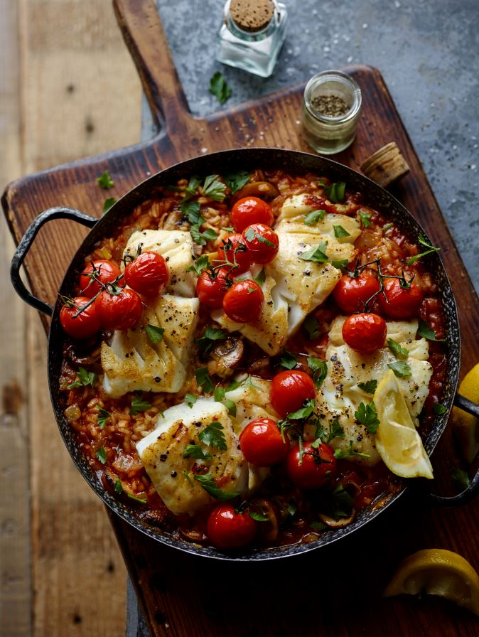

Cod Risotto

Description
Joe Wicks' cod risotto is a delicious and healthy dish created by the popular fitness and nutrition expert, Joe Wicks. This flavorful recipe features tender pieces of cod fish served atop a creamy and comforting risotto made from Arborio rice, sautéed onions, garlic, and a flavorful broth. The dish is often garnished with fresh herbs, such as parsley, and a squeeze of lemon juice to brighten the flavors. It's a satisfying and balanced meal that combines lean protein and complex carbohydrates, making it a favorite among those looking for a nutritious and tasty option for dinner.
Ingredients
- x2 tbsp Olive Oil
- x1 Onion, Diced
- x1 Leek, Finely Chopped
- x5 Rashers of Back Bacon, cut into 1cm strips
- x2 garlic cloves, finely chopped
- 200g chestnut mushrooms, sliced
- 1 tbsp tomato puree
- 2 tsp smoked sweet paprika
- 250g Arborio or similar risotto rice
- 750ml chicken stock
- 6 x 150g skinless cod fillets
- Salt and pepper
- 16 cherry tomatoes, on the vine if possible
- Bunch of parsley, roughly chopped
- Lemon wedges
Method
- Heat the oven to 180°C (fan 160°C/gas mark 4)
- Heat half of the olive oil in a large, hob-proof casserole dish or ovenproof saucepan. Slide in the onion, leek and bacon and fry, stirring occasionally for four minutes. Add the garlic and mushrooms and continue to stir-fry for two minutes.
- Squeeze in the tomato puree and stir through. Add the paprika and the rice and continue stir-frying for 30 seconds. Pour in the stock and bring to the boil, before clamping on a tight lid and transferring to the preheated oven. Bake the rice for 12 minutes.
- While the rice is cooking, heat up half the remaining oil in a large frying pan over a high heat. Season the cod with salt and pepper and when the oil is hot, carefully lay three fillets in. Brown on both sides. Remove the browned cod to a plate and repeat the process with the remaining oil and fish.
- After 12 minutes, take the risotto from the oven, remove the lid and givethe rice a stir. Lay the fish and tomatoes on top of the rice and then slide the dish back into the oven, uncovered. Roast for 10 minutes or until the fish is perfectly cooked through.
- Remove the risotto from the oven, sprinkle with parsley and serve up with the lemon wedges.